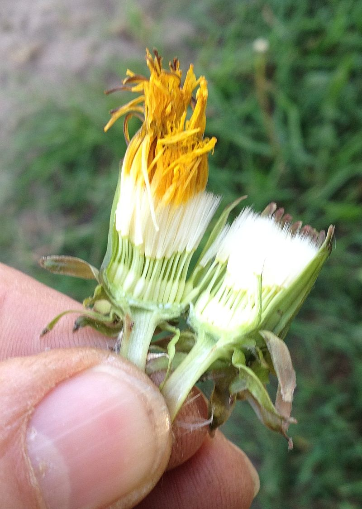
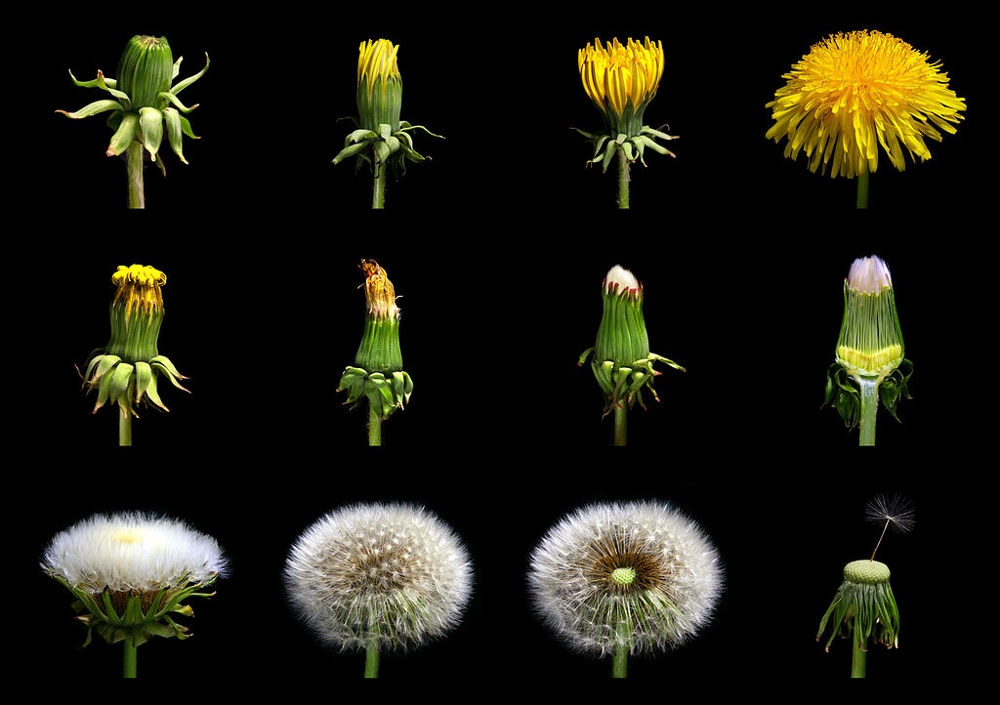

Pusteblume
Beschreibung
Der Löwenzahn ist eine ausdauernde krautige Pflanze, die eine Wuchshöhe von 10 cm bis 30 cm erreicht und in allen Teilen einen weißen Milchsaft enthält. Seine bis zu 1 Meter (selten auch bis 2 Meter) lange, fleischige Pfahlwurzel ist außen dunkelbraun bis schwarz.
Sie geht in eine kurze, stark gestauchte Sprossachse über, auf der die Blätter dicht in einer grundständigen Rosette stehen. Nach einer Verletzung des Vegetationspunktes regeneriert sich die Pflanze aus der Wurzel und bildet dann meist mehrere Blattrosetten. Die 10 bis 30 cm langen Blätter sind eiförmig bis eilanzettlich, unregelmäßig stark gelappt und tief eingeschnitten und gezahnt. Einschnitte und Zähne sind von der Basis bis zu etwa zwei Drittel der Länge stark, weiter zur Blattspitze häufig geringer ausgeprägt.
Weiterführende Links
Löwenzahn in der WikipediaLöwenzahn - Pusteblume

